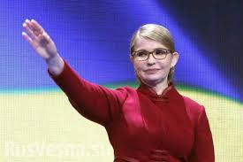

Кандидат у Президенти України Юлія Тимошенко

підтримка : 13,40%
Ю́лія Володи́мирівна Тимоше́нко (нар. 27 листопада 1960, м. Дніпропетровськ) —
український підприємець, державний діяч, політик. Народний депутат України з 1997 року.
У 1990-х керівник ряду приватних компаній з торгівлі бензином і газом, видобутку природних копалин.
До 1997 року очолювала монополіста з торгівлі газом на ринку України корпорацію
«Єдині енергетичні системи України» (ЄЕСУ), оборот якої 1996 року склав 11 млрд $
10-й та 13-й Прем'єр-міністр України (2005, 2007–2010),
віце-прем'єр-міністр України з питань паливно-енергетичного комплексу
(1999–2001), одна з лідерів «Помаранчевої революції» 2004, керівник партії «Батьківщина» та блоку Тимошенко.
Перша жінка-прем'єр-міністр незалежної України. Кандидат економічних наук.
З 5 серпня 2011 до 22 лютого 2014 була політв'язнем режиму Януковича.
Реабілітована Верховним судом України і Європейським судом з прав людини.
Виступає за інтеграцію України до ЄС, вступ до НАТО.